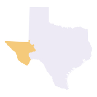

Trans-Pecos

MOST POSSIBLE Disaster: Drought because the ecoregion is the most hottest, dry place in Texas..
Some Major Cities In This Ecoregion Are: El Paso, Fort Stockton, Pecos, and Alpine
ESCAPE PLAN - 2 OPTIONS - 1. WAIT OUT THE DROUGHT. STOCK UP ON FOOD AND WATER(WATER IS VERY IMPORTANT IN A DROUGHT) AND LIVE LIFE AS NORMAL. 2. AS A DROUGHT IS NOT TOO SEVERE A DISASTER, YOU CAN JUST DRIVE OUT OF THE AREA AND SET UP A LIVELIHOOD SOMEWHERE ELSE.